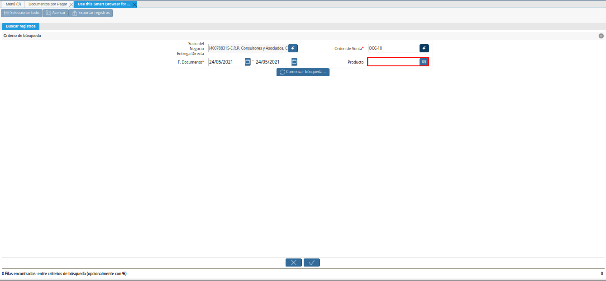

3.2.2.2. Relación de Ventas en Consignación¶
Para la relación de las ventas en consignación, es obligatoria la configuración de las mismas. Dicha configuración se encuentra explicada en el material Configuración de Ventas en Consignación, elaborado por ERPyA y deben ser cumplidas de manera obligatoria para garantizar el correcto funcionamiento del procedimiento de ventas en consignación.
Adicional a ello, la venta no debe estar incluida en ningún documento por pagar. De lo contrario, el registro no podrá ser visualizado al momento ser cargada la información a la pestaña “Línea de Factura”, de la ventana “Documentos por Pagar”.
Luego de las modificaciones realizadas por ERPyA no es necesario realizar un documento por pagar (pre-factura), para relacionar la venta o uso interno de los productos en consignación. Si se requiere relacionar al proveedor o simplemente consultar las mismas, se puede generar el “Reporte de Detalle de Consignación”.
Para ejemplificar el caso se tienen los siguientes productos en consignación del proveedor “E.R.P. Consultores y Asociados, C.A.”
01-Tap Tapabocas
01-TerCont Termos Contigo
01-Chup Chupetas
01-Lib Libretas (Cuadros)
Dichos productos se encuentran incluidos en la orden de compra “OCC-10”.
3.2.2.2.1. Reporte de Detalle de Consignación¶
Genere el “Reporte de Detalle de Consignación”, filtrando por “Socio del Negocio Entrega Directa”, “Asignado” y “F. Documento”, que corresponde al rango de fecha de facturación.
Note
El “Reporte de Detalle de Consignación”, se encuentra explicado de manera detallada en el material Reporte de Detalle de Consignación, elaborado por ERPyA.
Imagen 1. Reporte de Detalle de Consignación
Note
El reporte de relación de productos en consignación se puede generar muchas veces y sirve para ver los productos pendientes por relacionar, los productos relacionados o todos los productos sin importar si está o no relacionado.
3.2.2.2.2. Registrar Documento por Pagar¶
La factura de cuentas por pagar debe ser registrada cuando el proveedor realiza la entrega de la misma a cuentas por pagar. Si el proveedor hace entrega de más de una factura, se debe realizar por cada una de ellas, el procedimiento que se explica a continuación.
Warning
Se debe crear en ADempiere, las facturas entregadas por el proveedor exactamente iguales.
Realice el procedimiento regular para crear un documento por pagar, dicho procedimiento se encuentra explicado en el material Registro de Documento por Pagar, elaborado por ERPyA.
Note
El documento por pagar deber ser creado bajo las restricciones contempladas en la factura entregada por el proveedor:
Introduzca en el campo “No. del Documento”, el número de documento que contiene la factura entregada por el proveedor.
Seleccione en el campo “Fecha de Facturación”, la fecha de facturación que contiene la factura entregada por el proveedor.
Seleccione en el campo “Fecha Contable”, la fecha contable que contiene la factura entregada por el proveedor.
Introduzca en el campo “Descripción”, una breve referencia del rango de ventas utilizado para generar los documentos por pagar.
Seleccione en el campo “Lista de Precios”, la lista de precios que utiliza la organización.
Seleccione en el campo “Tipo de Conversión”, el tipo de conversión establecido entre la organización y el proveedor.
Introduzca en el campo “Nro de Control”, el número de control que contiene la factura entregada por el proveedor.
Luego de cargar la información necesaria en la pestaña principal “Factura”, seleccione el icono “Proceso”, ubicado en la barra de herramientas de ADempiere.
Imagen 2. Icono Proceso de la Ventana Documentos por Pagar
Seleccione la opción “Crear Líneas desde Facturas de Consignación”, desplegada por la selección del icono “Proceso”.
Imagen 3. Opción Crear Líneas desde Facturas de Consignación
Note
Para registrar un documento por pagar desde un inventario de uso interno, se debe realizar el mismo procedimiento explicado anteriormente en el proceso Registrar Documento por Pagar, con la diferencia de que en vez de seleccionar la opción “Crear Líneas desde Facturas de Consignación”, del icono “Proceso”, se selecciona la opción “Crear Líneas desde Inventario de Uso Interno de Consignación” y posteriormente el inventario de uso interno correspondiente.

Podrá visualizar la ventana del proceso con diferentes campos que permiten filtrar la información de las ventas.
Note
La información a ser visualizada en el presente proceso, va a depender de las siguientes condiciones:
La información cargada en la orden de compra, dicha orden debe estar en estado “Completo”.
La información visualizada en el reporte Reporte de Detalle de Consignación.
De no coincidir la información del reporte con la información visualizada en el presente proceso, debe realizar lo siguiente:
Verificar que se cumpla con la Configuración de Ventas en Consignación.
Verificar que el producto se encuentre incluido en una orden de compra, esto lo puede realizar generando el reporte Detalle de la Orden.
Imagen 4. Ventana del Proceso Crear Líneas desde Facturas de Consignación
En el campo “Socio del Negocio Entrega Directa”, podrá visualizar el socio del negocio seleccionado en la pestaña principal “Factura”.
Imagen 5. Campo Socio del Negocio
Seleccione en el campo “Orden de Venta”, la orden para filtrar la búsqueda de información.
Imagen 6. Campo Orden de Venta
Warning
La orden de compra es un factor clave y se debe colocar para poder crear la factura de cuentas por pagar desde la venta o el uso interno
Seleccione en el campo “F. Documento”, el rango de fecha de facturación para filtrar la búsqueda de información.
Imagen 7. Campo F. Documento
Seleccione en el campo “Producto”, el producto para filtrar la búsqueda de información.

Imagen 8. Campo Producto del Proceso
Seleccione la opción “Comenzar Búsqueda”, para filtrar la información en base a lo seleccionado anteriormente.
Imagen 9. Opción Comenzar Búsqueda
Seleccione todos los registros filtrados por el proceso.
Imagen 10. Selección de Registros
Seleccione la opción “OK”, para cargar a la pestaña “Línea de Factura”, la información seleccionada anteriormente.
Imagen 11. Opción OK


Seleccione el icono “Refrescar”, ubicado en la barra de herramientas de ADempiere, para actualizar la ventana “Documentos por Pagar” y se pueda visualizar la información cargada desde el proceso.
Imagen 12. Icono Refrescar
Seleccione la pestaña “Línea de Factura”, para revisar y verificar la información cargada desde el proceso.
Imagen 13. Pestaña Línea de Factura
Seleccione la pestaña principal “Factura”, para completar el registro del documento por pagar.
Imagen 14. Pestaña Principal Factura
Note
Si se requiere cambiar el tipo de conversión, es necesario recalcular la tasa para las líneas de la factura. Para ello, se debe realizar el siguiente procedimiento:
Seleccione el icono “Proceso”, ubicado en la barra de herramientas de ADempiere
Seleccione la opción “Recalcular Tasa para Líneas de Factura”, para recalcular los precios de los productos que contiene el documento por pagar, en base a la lista de precios y tipo de conversión seleccionada anteriormente.
Podrá visualizar la ventana del proceso “Recalcular Tasa para Líneas de Factura”, para recalcular los precios de los productos cargados a la línea de la factura.
Seleccione la opción “OK”, para ejecutar el proceso.
Seleccione el icono “Proceso”, ubicado en la barra de herramientas de ADempiere.
Imagen 15. Icono Proceso
Seleccione la opción “Procesar Factura”, ubicada en el menú desplegado por el icono “Proceso”.
Imagen 16. Opción Procesar Factura
Seleccione la acción “Completar” y la opción “OK”, para conmpletar el registro del documentonpor pagar.
Imagen 17. Opción Completar y Opción OK

Note
Al anular una orden de compra o documento por pagar se liberan todos los documentos de ventas o uso interno relacionados a los mismos.